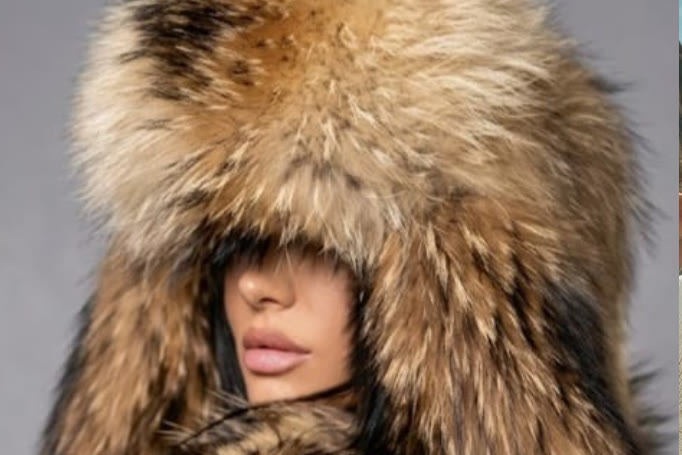

Marque perso
FUTRAK
Ma marque d'accessoires d'hiver en fourrure : site e-commerce en polonais pour le marché polonais, créé avec l'IA.
Site en ligne20301050.github.io/futrak
VISITER LE SITE 
Le projet
Ma propre marque d'accessoires d'hiver haut de gamme en fourrure, lancée pour la Pologne : un site e-commerce entièrement en polonais, pour présenter la collection hiver 2026/2027.
Mon rôle
J'ai tout créé moi-même :
- Identité visuelle : logo losange Art déco, palette bleu nuit
- Site créé avec l'IA puis codé en HTML/CSS : accueil, pages produits en polonais
- Mise en ligne sur GitHub Pages
Outils
- IA générative
- HTML / CSS
- GitHub Pages